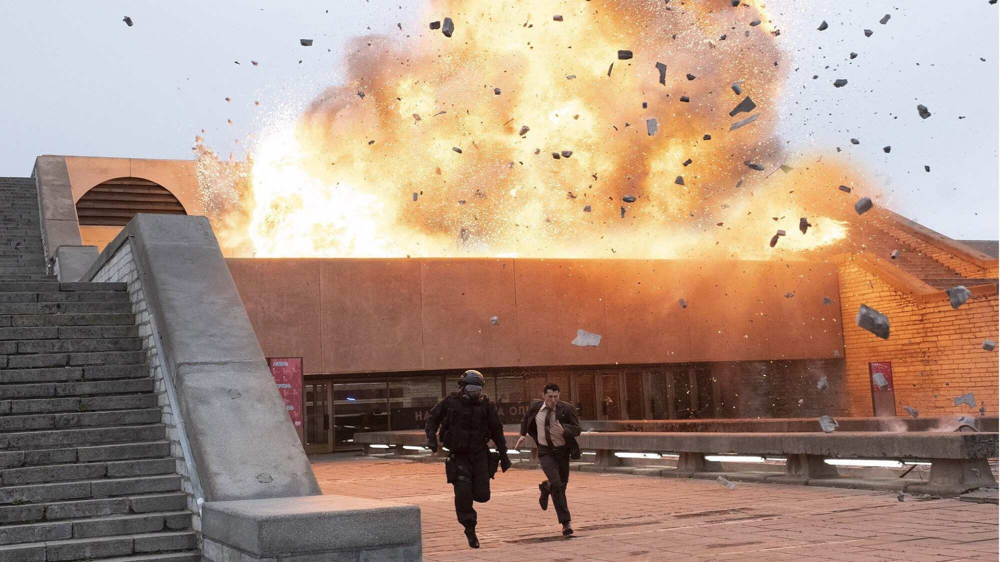
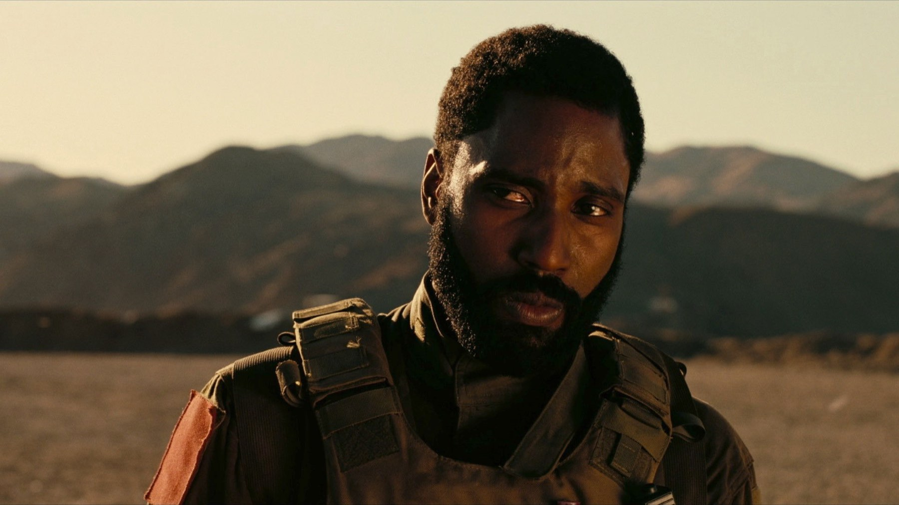

Tenet: la trama e il finale spiegati (spoiler)
Un oggetto che viaggia all'indietro, una battaglia in due direzioni e un amico che sapeva già tutto: come si rimettono in fila i pezzi del film di Christopher Nolan
Un uomo salva sé stesso senza saperlo, e il film non ce lo dice finché non siamo troppo stanchi per protestare. Tenet è un puzzle in cui la soluzione era già dentro il primo pezzo. Questa pagina rimette in ordine trama e finale, quindi se non l'avete visto tornate più tardi.
Il film in breve
Scritto e diretto da Christopher Nolan, Tenet ha come protagonista John David Washington, un agente della CIA di cui non conosciamo il nome e che per questo è chiamato semplicemente il Protagonista. Con lui Robert Pattinson nei panni di Neil, Elizabeth Debicki in quelli di Kat, Kenneth Branagh in quelli del magnate russo Sator, Dimple Kapadia in quelli di Priya e Michael Caine. Dura 150 minuti ed è uscito nel Regno Unito e in Italia il 26 agosto 2020 e negli Stati Uniti il 3 settembre. Aveva un budget di 205 milioni di dollari e ne ha incassati circa 376,6 nel mondo: fu il quinto titolo più visto del 2020, ma senza rientrare nei costi.
L'inversione: la regola da tenere a mente
La storia regge su un'idea sola. Alcuni oggetti e persone possono essere invertiti: il loro tempo scorre all'indietro, mentre il mondo intorno continua ad andare avanti. Chi è invertito vede ogni cosa muoversi al contrario, e a chi sta fuori appare come una scena riavvolta. Nel racconto c'è un dispositivo, il tornello, che inverte l'entropia di ciò che attraversa. Per il resto la regola è semplice: se vedi qualcuno fare un gesto al contrario, stai guardando una persona invertita, non un effetto speciale.
La difficoltà è che il film mostra la regola prima di spiegarla e che molte scene si guardano due volte, una in avanti e una all'indietro. A noi la prima visione ha dato la sensazione di restare sempre in ritardo di un passo, e in parte è voluto: Nolan ci mette nella condizione del Protagonista, a cui dicono «non cercare di capire, senti». Il problema è che a tratti non si sente nemmeno bene, e torniamo sotto sul mixaggio.
Cosa succede a Stalsk-12
Il piano finale è una tenaglia temporale: due squadre attaccano lo stesso obiettivo, una in avanti e una invertita, in una finestra di dieci minuti. La manovra ha luogo a Stalsk-12. Lo scopo è arrivare prima di Sator all'Algoritmo, un oggetto del futuro che, se riunito nelle sue parti, può invertire l'intero mondo con effetti catastrofici. Le due squadre non si vedono come nemici: ciò che una ha fatto, per l'altra non è ancora accaduto, e il cerchio si chiude grazie alle informazioni che passano da un verso all'altro.
Neil e il Protagonista: il cerchio si chiude
Il colpo di scena più importante riguarda Neil. Per tutto il film sembra un compagno brillante e sfuggente. Nel finale scopriamo che è stato reclutato da una versione futura del Protagonista, e che il suo sacrificio durante la battaglia serve a salvare proprio il Protagonista del presente. Si tratta di un paradosso di bootstrap: un evento che è la causa di sé stesso, senza un inizio chiaro. Il Protagonista non soltanto fonda Tenet, ma lo fa perché Tenet esiste già e gli ha affidato il compito.
Qui sta anche il senso del finale. Priya, che gli ha spiegato tutta la minaccia, cade per mano del Protagonista, che mette in pratica fino in fondo ciò che aveva imparato: per fermare chi sa troppo bisogna agire presto e senza esitare. È una conclusione amara, e a noi sembra la parte più coerente del film: la vittoria passa per un gesto che non si può raccontare a nessuno.
Sator, Arepo e il quadrato che si legge in ogni verso
Nolan gioca con i palindromi, parole che si leggono uguali da destra a sinistra. I nomi Sator, Arepo, Tenet, Opera e Rotas rimandano al quadrato del Sator, una scritta latina antica che resta identica in tutte le direzioni. Tenet è già di per sé un palindromo. Anche la colonna sonora di Ludwig Göransson segue la stessa idea, con melodie costruite per suonare uguali avanti e indietro. Per noi è la dimostrazione di quanto il regista tenga alla coerenza: la regola dell'opera non si trova soltanto nella trama, ma anche nei nomi e nella musica.
Come è stato fatto
Le riprese sono durate dal 22 maggio al 12 novembre 2019, in sette paesi, e il film è stato girato in 70 mm e IMAX. Per lo schianto dell'aereo Nolan ha comprato un Boeing 747 invece di ricorrere agli effetti digitali. La scheda italiana di Wikipedia riferisce che la sceneggiatura ha richiesto oltre cinque anni di lavoro e che gli attori potevano consultarla solo in stanze chiuse a chiave. Il film ha vinto l'Oscar per i migliori effetti visivi alla 93ª edizione, ed è stato candidato per la scenografia, mentre ai BAFTA ha vinto per gli effetti visivi.

Perché divide
Su Rotten Tomatoes ha il 70% di giudizi positivi e su Metacritic 69 su 100. In Italia, riassume la scheda di Wikipedia, la critica ha apprezzato effetti e interpretazioni, ma ha criticato la chiarezza della trama, il mixaggio audio e la freddezza dei personaggi. Noi siamo d'accordo con questa lettura. Il finale è coerente e il cerchio chiuso è elegante, ma quando una parte dei dialoghi si perde nel rumore diventa più difficile affezionarsi a chi parla. La nostra posizione: Tenet è un film da ammirare più che da amare, e la seconda visione, con i sottotitoli, è la migliore.
Dove vederlo
In Italia, a ottobre 2026, Tenet è in streaming su Netflix, Prime Video, Sky Go, Timvision, Now e HBO Max. Si noleggia anche su Apple TV Store, Google Play Movies, Rakuten TV e Chili. Le disponibilità cambiano spesso: conviene ricontrollare prima di guardarlo.
Il nostro consiglio è rivederlo con i sottotitoli attivi, perché sono loro a restituire le battute che il mixaggio copre. Alla seconda visione, sapendo già dove porta, le scene tra Neil e il Protagonista cambiano completamente significato, ed è lì che il film dà il meglio.
Tenet è un cerchio costruito alla perfezione e un po' freddo al tocco: lo si ammira alla prima visione e lo si capisce, finalmente, alla seconda.
Domande frequenti
Qual è il finale di Tenet?
Il Protagonista scopre di essere stato lui a fondare Tenet e che Neil, reclutato da una sua versione futura, si sacrifica per salvarlo. Il Protagonista uccide poi Priya, per impedire che la minaccia dell'Algoritmo si ripresenti.
Come funziona la tenaglia temporale?
Due squadre attaccano lo stesso obiettivo a Stalsk-12: una procede in avanti nel tempo, l'altra è invertita e va all'indietro, così i due gruppi si coprono a vicenda nell'arco di dieci minuti.
Dove si vede Tenet in Italia?
A ottobre 2026 è in streaming su Netflix, Prime Video, Sky Go, Timvision, Now e HBO Max; si noleggia anche su Apple TV Store, Google Play Movies, Rakuten TV e Chili.